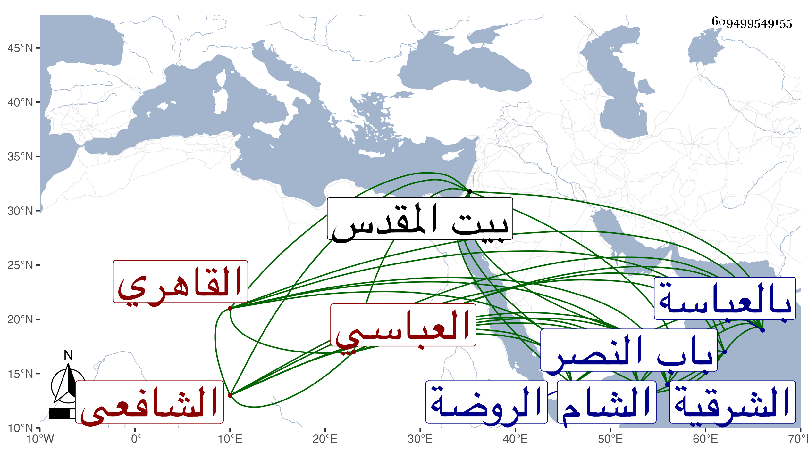

0902Sakhawi.DawLamic.ITO20230111-ara1.EIS1600.609499549155
Biography ID: 609499549155
71
محمد بن محمد بن أحمد بن عبد الوهاب بن أحمد بن وحشي بن سبع بن إبراهيم أمين الدين بن أمين الدين العباسي ثم القاهري الشافعي نزيل سعيد السعداء ويعرف بأمين الدين العباسي . ولد في سنة ثمان وثلاثين وثمانمائة بالعباسة من الشرقية وتحول هو وأخوه عماد الدين عبد الرزاق مع أخيهما التاج عبد الوهاب فسكنا البديرية وأكمل صاحب الترجمة بها القرآن وحفظ البهجة وألفية ابن مالك وجمع الجوامع وغيرها ، وعرض على جماعة وأخذ في الفقه عن الشريف النسابة والزين البوتيجي ولازم الفخر عثمان المقسي والجلال البكري والزين زكريا والبرهان العجلوني وعليه قرأ في البخاري وغيره وحضر عند العبادي بل أخذ عن العلم البلقيني والمناوي وعن الثاني مع أحمد الخواص وأبي الجود أخذ الفرائض وكذا أخذها مع الحساب عن الشريف على تلميذ ابن المجدي وعن الخواص مع الأبدي أخذ العربية ولازم في الأصلين وغيرهما كالمعاني والبيان التقي والعلاء الحصنيين بل أخذ عن العز عبد السلام البغدادي والكافياجي والشمني وإمام الكاملية ثم الكمال بن أبي شريف وأبي السعادات البلقيني وسمع الحديث على جماعة وعلمت الآن سماعه للبخاري في الظاهرية القديمة وتردد للمحب بن الشحنة ولا أستبعد أخذه عن ابن حسان وكتب على البرهان الفرنوي ويس وغيرهما وصحب الصلاح المكيني واختص به وقرأ عليه الفقه والحديث وكذا اختص بقجماس لكونه ناب عن أخيه في أقراء مماليكه ، وحج غير مرة وجاور بل سافر على الصر بعناية المكيني وسمع على التقى بن فهد وغيره هناك وكذا زار بيت المقدس والخليل ، ودخل الشام فأخذ عن البدر بن قاضي شهبة وخطاب وآخرين ، وتنزل في سعيد السعداء وغيرها من الجهات كالمزهرية ، وكان خبيرا بدنياه مقبلا على بني الدنيا متلمذا لهم ولو كانوا قاصرين ولم ينفك عن الأشتغال وملازمة العمل والأخذ عن من دب ودرج حتى أشير إليه بالفضيلة التامة والتفنن ، وكتب بخطه أشياء منها البخاري وتقويم البلدان وكذا تقويم الأبدان بل كتب على مجموع الكلائي وغيره وأقرأ الطلبة مع عقل وسكون وأوصاف . مات في صفر سنة سبع وثمانين ودفن بالقرب من الروضة خارج باب النصر بحوش يشهر بتربة القباني ووجد له مما لم يكن يظن به زيادة على ألف دينار سوى كتبه وأثاثه به وخلف أربعة ولاد فيهم أنثى واسم أكبرهم أحمد رحمه الله وسامحه .
